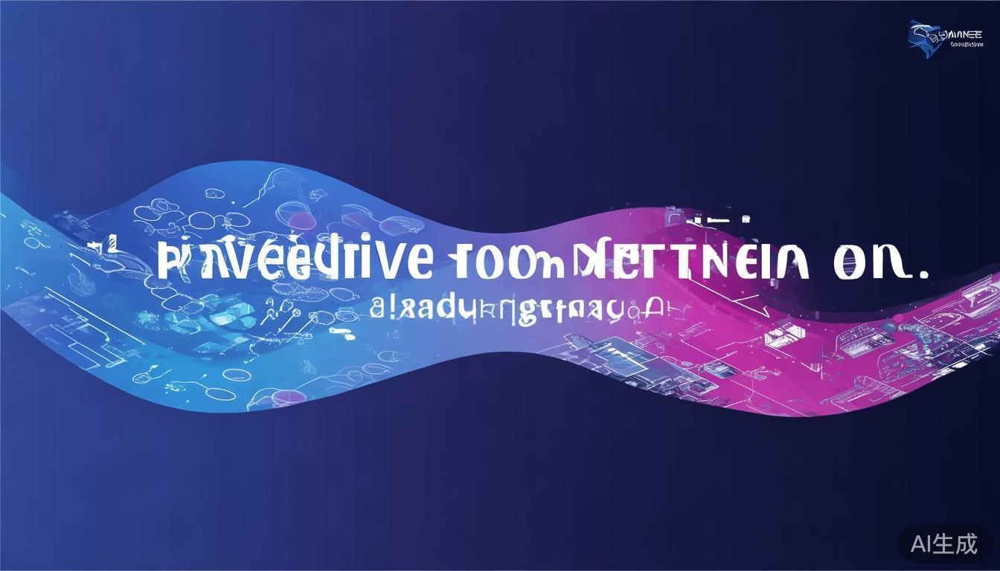

白驹 · 全局大脑 · AI 创作纪元
制造业AI应用实战
制造业是AI落地的主战场。从质检到预测性维护，从供应链优化到智能排产，AI正在重塑制造的每个环节。
一、智能质检
场景
- 表面缺陷检测（划痕、凹陷、色差）
- 尺寸测量
- 装配完整性检查
AI方案
- 图像采集：工业相机拍摄产品图像
- AI识别：深度学习模型识别缺陷
- 自动分拣：NG品自动剔除
- 数据分析：缺陷类型统计，追溯工艺问题
效果
- 检测速度：从人工30秒/件提升到AI 0.1秒/件
- 准确率：从人工85%提升到AI 99.5%+
- 一致性：AI不会疲劳，24小时稳定工作
二、预测性维护

场景
设备突发故障导致停产，损失巨大。
AI方案
- 数据采集：振动、温度、电流等传感器数据
- 特征提取：AI识别异常模式
- 故障预测：提前数天/数周预警
- 维护建议：推荐维护时间和备件
效果
- 非计划停机减少50-70%
- 维护成本降低20-30%
- 设备寿命延长10-20%
三、智能排产
场景
多品种、小批量、交期紧，人工排产困难。
AI方案
- 输入：订单、产能、物料、设备状态
- 优化：AI算法生成最优排产方案
- 动态调整：插单、设备故障时自动重排
- 可视化：甘特图展示，一目了然
效果
- 排产时间从数小时缩短到几分钟
- 设备利用率提升10-20%
- 交期达成率提升15-30%
四、供应链优化
1. 需求预测
AI应用：
- 分析历史销售数据、市场趋势、季节因素
- 预测未来需求，优化库存
- 减少缺货和积压
2. 智能采购
AI应用：
- 自动比价，推荐最优供应商
- 预测原材料价格波动
- 优化采购时机和批量
3. 物流优化
AI应用：
- 路径规划，降低运输成本
- 装载优化，提高车辆利用率
- 实时追踪，异常预警
五、工艺优化
1. 参数调优
场景：注塑、焊接、涂装等工艺参数优化
AI方案：
- 输入历史工艺数据和质量数据
- AI找出最优参数组合
- 实时调整，稳定质量
2. 能耗优化
AI方案：
- 分析设备能耗数据
- AI识别节能机会
- 优化设备运行策略
六、数字孪生
概念
物理工厂的虚拟映射，实时同步。
AI应用
- 仿真优化：在虚拟环境中测试新工艺，不影响实际生产
- 预测分析：基于实时数据预测未来状态
- 远程运维：专家远程诊断，AR辅助维修
七、实施路径
第一步：数据准备
- 评估现有数据（设备数据、质量数据、ERP数据）
- 补齐传感器和数据采集系统
- 数据清洗和标注
第二步：单点试点
- 选择一个痛点场景（如质检）
- 小范围试点，验证效果
- 积累经验，培养团队
第三步：规模推广
- 复制成功经验到其他产线
- 建设AI中台，统一管理
- 持续优化，迭代升级
八、注意事项
- 数据质量：AI的效果取决于数据质量，垃圾进垃圾出
- 场景选择：优先选择数据充足、规则明确、价值高的场景
- 人才储备：培养既懂制造又懂AI的复合型人才
- 渐进推进：不要追求一步到位，小步快跑
核心理念：制造业AI不是「机器换人」，而是「人机协作」——AI处理重复和计算，人专注创新和决策。
出处声明：本页内容为白驹全局大脑原创，或已标注引用来源；改编内容遵循原始项目许可证（如 MIT / CC），不侵犯原作者权益。若引用内容涉及版权问题，请联系我们更正。